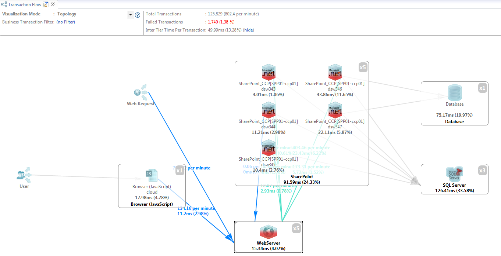
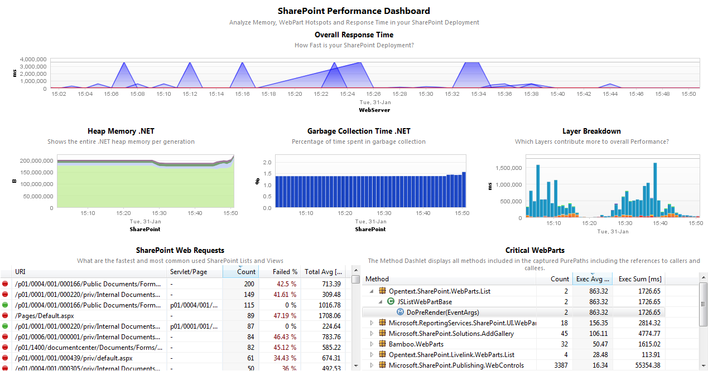
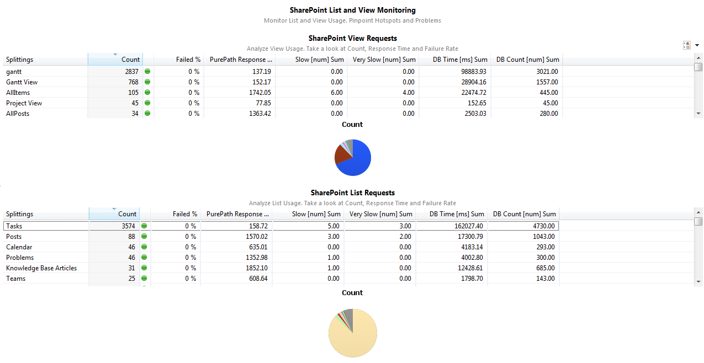

We have recently updated the FastPack to leverage the latest features of dynaTrace and also tested it with SharePoint 2010. We also provided a package for dynaTrace 6.
The dynaTrace FastPack for the Microsoft SharePoint (both Windows SharePoint Services and Microsoft Office Share Server) enables faster analysis of SharePoint Applications by providing specific Sensor Packs and Dashboards to identify problems in custom WebParts, SharePoint Lists & Views, usage of CAML, ...
|
Name |
Microsoft SharePoint FastPack |
|
dynaTrace Version |
4.x, 5.x |
|
SharePoint Version |
Tested with SharePoint 2007, 2010 and 2013 |
|
Author |
Andreas Grabner (andreas.grabner@dynatrace.com) |
|
License |
|
|
Support |
Community Supported
|
|
FastPack Contents |
|
 |
|
 |
The Performance Dashboard highlights the most interesting performance aspects of a SharePoint Deployment:
Overall Response Time shows you whether you have any general Performance Issues
Memory and Gargabe Collection allows you to see whether you need to allocate more memory for your SharePoint Application Pools or whether you have any memory leaks
Layer Breakdown gives you a quick indication on the Application Layers that are the main performance contributors, e.g: ADO.NET indicates that your SharePoint App is too heavy on the Database. ASP.NET WebParts means you want to optimize WebPart Usage.
SharePoint WebRequests shows which pages are requests, which ones have problems and which ones are fast or slow
Critial WebParts highlights those WebParts that have a high performance contribution
|
 |
The Usage Dashboard helps you to understand which Lists and Views are heavily used and which ones may indicate a problem, e.g: too much load on a List results in high error rates or long response times. In order to answer these questions simply sort the View or List Response Table by Count, Failed % or Response Time.
On the dynaTrace Blog the following posts give a good overview of the FastPack and give additional hints about problematic areas in SharePoint applications:
The Download Package includes everything you need to manage SharePoint Applications:
Pre-Configured System Profile SharePoint including a Deep-Dive and Memory Sensor Group to be enabled by Developers in Pre-Prod Environments
2 Dashboards for Usage and Performance Monitoring
Follow the following Steps:
Import the SharePoint FastPack into your dynaTrace Server. For details on how to do this please refer to the Online Documentation on Plugin Management.
Configure your SharePoint Application Agents to use the name "SharePoint" using the .NET Agent Configuration Tool on your SharePoint Servers.
(optional): If you also have dynaTrace UEM configure your IIS Web Server to use the name "WebServer_SharePoint". More information on Microsoft IIS Web Server Agent Configuration
If you run on older versions of dynaTrace have a look at SharePoint FastPack for dynaTrace 3.x